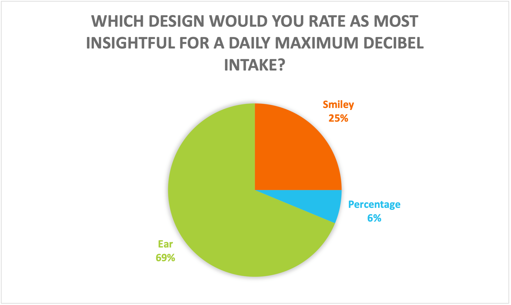

RESULTS
The test was prepared using Maze. And was sent to several test takers, including the target audience. A total of 29 responses were received, which is enough to conclude.
Because some questions required the test persons to fill in an answer themselves, I have translated the answers into a diagram where it becomes clear what most test persons choose.
The test subjects were first shown an image with 3 different designs for 5 seconds.
After 5 seconds they get the following questions:
- Which design stuck with you the most?
- And why do you think it stuck with you?
- Which one felt most like you have to take action?
- And why?
The following answers came out of this.
We can see that over 2/3 of testers found the smiley design stuck best and left almost like you have to take action.
In the next 2 questions, testers were shown the image with the design accompanying the question. in doing so, they had to answer the question:
Which design would you rate as most insightful for a daily maximum decibel intake? And Which design raises the most awareness in you?
This showed that over 69% of the testers rated the ear design as most insightful for a daily maximum decibel intake.
Also, 3/5 of testers found the ear design to be the most awareness-raising.
CONCLUSION
LEARNING OUTCOME
Learning outcome 1: User interaction (analysis & advice)
By analysing the user and making a conclusion about the received test results, I can advise on the most suitable solution.
Learning outcome 5: Investigative problem solving
This research document uses the CMD research methods. As a result, conclusions have been drawn that provide answers to the sub-questions. These answers help answer the main question.